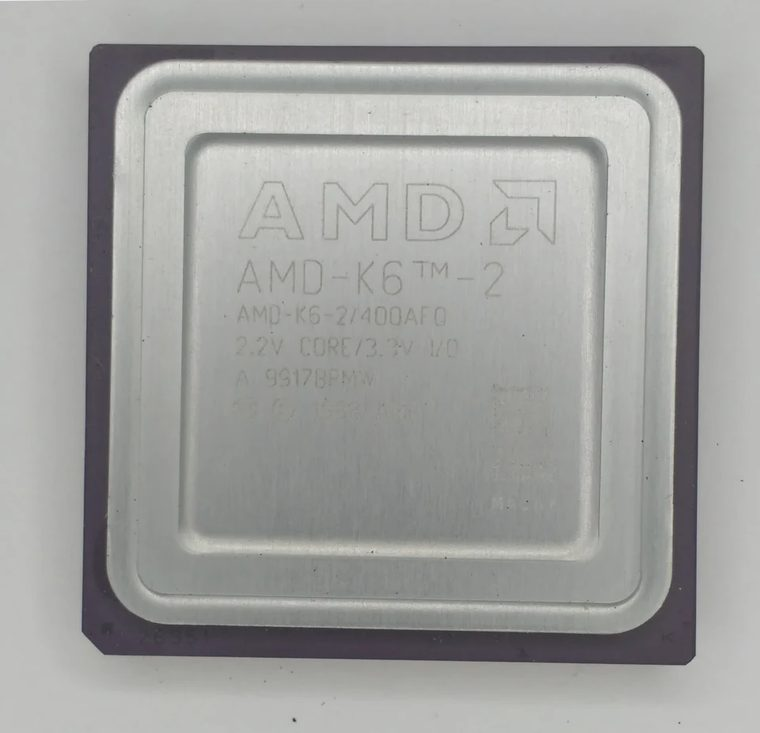

[ AMD GENERATIONS // IDENTIFIED COMPONENT ]
AMD-K6-2/400
The 400 MHz AMD-K6-2 paired the K6 integer core with 3DNow! multimedia instructions for Super Socket 7 desktop systems.

MODEL IDENTIFICATION: AMD-K6-2/400. Read the full top marking/OPN, speed grade, package, and stepping from the physical part; do not transfer specifications across similarly named revisions.
Recorded specifications
| Cataloged part | AMD-K6-2/400 |
|---|---|
| Era / family | AMD K6-2 family, 1998; model 9 / 400 MHz speed grade. |
| Key specifications | 400 MHz core; 100 MHz-class front-side bus; 64 KB split L1 cache; 3DNow! and MMX instruction support; Super Socket 7, 321-pin ceramic PGA package; nominal 2.2 V core on model 9 parts. |
| Interface / fit | Requires a Super Socket 7 motherboard with a 100 MHz bus, multiplier support, suitable BIOS/CPUID recognition, and the correct 2.2 V core supply. Older Socket 7 boards may not provide the needed bus or voltage. |
| Variants / identification | K6-2 revisions and voltage specifications vary by model/stepping; do not apply one voltage across all K6-2 chips. The K6-2+ adds on-die L2 cache and is a separate mobile-derived product. |
Compatibility and service notes
- Requires a Super Socket 7 motherboard with a 100 MHz bus, multiplier support, suitable BIOS/CPUID recognition, and the correct 2.2 V core supply. Older Socket 7 boards may not provide the needed bus or voltage.
- K6-2 revisions and voltage specifications vary by model/stepping; do not apply one voltage across all K6-2 chips. The K6-2+ adds on-die L2 cache and is a separate mobile-derived product.
- Read the full AMD marking, including model/revision, and set voltage using the board manual. Preserve jumper configuration; inspect package pins and avoid relying on overclocked settings for archival benchmark records.
- Before installation, compare the exact CPU marking with the motherboard maker’s support list, board revision, BIOS minimum, package/socket, power requirements, and memory type. Do not force a package into a socket.
Service & archival record
Read the full AMD marking, including model/revision, and set voltage using the board manual. Preserve jumper configuration; inspect package pins and avoid relying on overclocked settings for archival benchmark records.
For a collection record, photograph both sides, retain the full model/OPN and date/lot codes, describe package and contact condition, and record the tested motherboard revision, firmware, cooling, memory, and measured operating conditions. Separate measured observations from published limits.
Sources & further reading
- AMD K6-2 processor data sheet and model/voltage tables — model 9 referenceModel-specific manufacturer, technical-document, or product-history reference; consult the exact device marking and board revision.
- AMD K6 processor documentation archive — K6-2 / 3DNow! technical referencesModel-specific manufacturer, technical-document, or product-history reference; consult the exact device marking and board revision.
- AMD K6-2 product history and family context — AMD company historyModel-specific manufacturer, technical-document, or product-history reference; consult the exact device marking and board revision.
- Various Creators — Running benchmarks on AMD K6-2/400 CPUIndependent video review; treat as supplementary context, not primary manufacturer documentation.
Third-party mirrors or historical document indexes may host manufacturer-authored manuals. Check document revision and exact model marking; board compatibility remains specific to its maker and firmware.